БЛОК АВТОМАТИЧЕСКОЙ ТРАНСМИССИИ > РАЗБОРКА |
| 1. СНИМИТЕ ПРОБКУ СЛИВНОГО ОТВЕРСТИЯ В СБОРЕ |
| 2. СНИМИТЕ ШЛАНГ САПУНА |
| 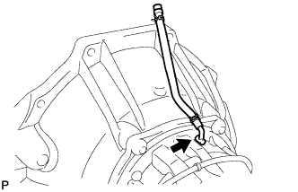 |
Снимите пробку шланга сапуна с шлангом сапуна.
Снимите шланг сапуна с пробки шланга сапуна.
| 3. СНИМИТЕ ЛЕВЫЙ РЫЧАГ ПРИВОДНОГО ВАЛА ТРАНСМИССИИ |
 |
Отверните гайку и снимите пружинную шайбу и рычаг приводного вала.
| 4. СНИМИТЕ ДАТЧИК ПОЛОЖЕНИЯ ПАРКИНГА / НЕЙТРАЛИ В СБОРЕ |
С помощью отвертки загните лепесток стопорной шайбы.
Отверните гайку и снимите стопорную шайбу.
Выверните болт и снимите датчик положения паркинга/нейтрали.
| 5. СНИМИТЕ ДАТЧИК ТЕМПЕРАТУРЫ ТРАНСМИССИОННОЙ ЖИДКОСТИ |
 |
Снимите датчик.
Снимите с датчика уплотнительное кольцо.
| 6. СНИМИТЕ ШТУЦЕР ПАТРУБКА МАСЛЯНОГО РАДИАТОРА |
 |
Снимите 2 штуцера патрубков.
Снимите кольцевое уплотнение с каждого штуцера патрубка.
| 7. СНИМИТЕ ДАТЧИК ЧАСТОТЫ ВРАЩЕНИЯ NC0 |
| 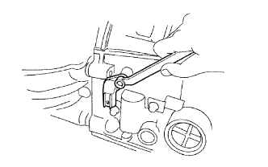 |
Выверните болт и снимите датчик.
Снимите с датчика уплотнительное кольцо.
| 8. СНИМИТЕ ДАТЧИК ЧАСТОТЫ ВРАЩЕНИЯ SP2 |
 |
Выверните болт и снимите датчик.
Снимите с датчика уплотнительное кольцо.
| 9. СНИМИТЕ КОЖУХ АВТОМАТИЧЕСКОЙ ТРАНСМИССИИ |
| 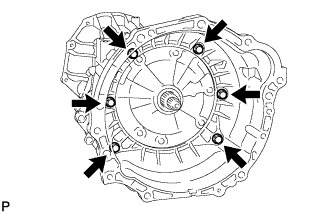 |
Выверните 6 болтов.
Снимите кожух трансмиссии.
| 10. ЗАКРЕПИТЕ КАРТЕР ТРАНСМИССИИ |
Установите картер трансмиссии на приспособление для переборки.
| 11. СНИМИТЕ ЗАДНИЙ ПЕРЕХОДНИК РАЗДАТОЧНОЙ КОРОБКИ |
Выверните 8 болтов.
Снимите задний переходник раздаточной коробки.
| 12. СНИМИТЕ ЗАДНИЙ САЛЬНИК ПЕРЕХОДНИКА КАРТЕРА РАЗДАТОЧНОЙ КОРОБКИ |
Извлеките сальник с помощью отвертки.
| 13. СНИМИТЕ МАСЛОПРИЕМНИК ПЕРЕХОДНИКА ЗАДНЕГО КАРТЕРА РАЗДАТОЧНОЙ КОРОБКИ |
| 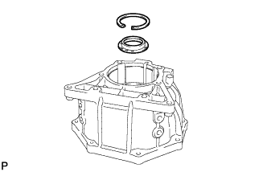 |
С помощью съемника стопорных колец снимите пружинное стопорное кольцо.
Снимите маслоприемник переходника заднего картера раздаточной коробки с заднего переходника раздаточной коробки.
| 14. СНИМИТЕ РОТОР ДАТЧИКА |
| 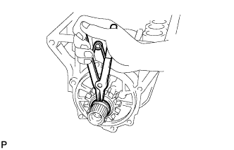 |
С помощью съемника стопорных колец снимите пружинное стопорное кольцо.
| 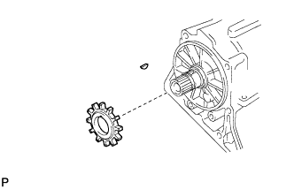 |
Снимите ротор датчика частоты вращения и шпонку.
| 15. СНИМИТЕ МАСЛЯНЫЙ ПОДДОН АВТОМАТИЧЕСКОЙ ТРАНСМИССИИ В СБОРЕ |
 |
Выверните 19 болтов.
| 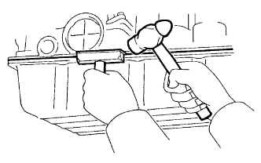 |
Вставьте лезвие инструмента для обрезки прокладки поддона картера между картером трансмиссии и масляным поддоном и срежьте нанесенный герметик.
Снимите поддон с картера трансмиссии.
| 16. ПРОВЕРЬТЕ МАСЛЯНЫЙ ПОДДОН АВТОМАТИЧЕСКОЙ ТРАНСМИССИИ В СБОРЕ |
Снимите магниты и с их помощью соберите стальные частицы.
Внимательно осмотрите посторонние включения и частицы, имеющиеся в поддоне и на магнитах, чтобы определить, какому типу износа подвергается трансмиссия.
| 17. СНИМИТЕ СЕТЧАТЫЙ МАСЛЯНЫЙ ФИЛЬТР КОРПУСА КЛАПАНОВ В СБОРЕ |
Переверните трансмиссию.
| 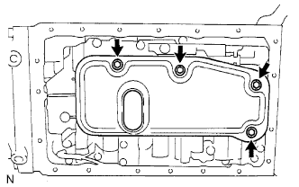 |
Выверните 4 болта и снимите сетчатый масляный фильтр корпуса клапанов с корпуса клапанов.
Снимите 3 прокладки с маслоприемника с сетчатым фильтром.
| 18. СНИМИТЕ ЖГУТ ЭЛЕКТРОПРОВОДКИ ТРАНСМИССИИ |
| 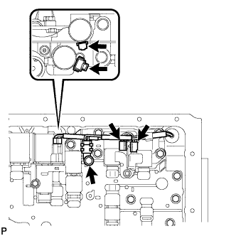 |
Выверните болт, снимите зажим датчика температуры и отсоедините датчик температуры.
Отсоедините 4 разъема от электромагнитных клапанов переключения передач.
Выверните болт и снимите стопорную пластину с картера.
Вытяните жгут электропроводки трансмиссии из картера трансмиссии, чтобы снять его.
Снимите кольцевое уплотнение с разъема жгута электропроводки трансмиссии.
| 19. СНИМИТЕ КОРПУС КЛАПАНОВ ТРАНСМИССИИ В СБОРЕ |
Выверните 20 болтов и снимите корпус клапанов.
| 20. СНИМИТЕ КОРПУС ЗАПОРНОГО ШАРИКА |
Снимите пружину и корпус запорного шарика.
| *1 | Корпус запорного шарика |
| *2 | Пружина |
| 21. СНИМИТЕ ПОРШЕНЬ ГИДРОАККУМУЛЯТОРА B-2 |
 |
Подав сжатый воздух в отверстие для масла, извлеките пружину и поршень гидроаккумулятора B-2.
Снимите 2 кольцевых уплотнения с поршня.
| 22. СНИМИТЕ ПОРШЕНЬ ГИДРОАККУМУЛЯТОРА C-2 |
Подав сжатый воздух в отверстие для масла, извлеките 2 пружины и поршень гидроаккумулятора C-2.
Снимите 2 кольцевых уплотнения с поршня.
| 23. СНИМИТЕ ПОРШЕНЬ ГИДРОАККУМУЛЯТОРА B-0 |
Подав сжатый воздух в отверстие для масла, извлеките пружину и поршень гидроаккумулятора B-0.
Снимите 2 кольцевых уплотнения с поршня.
| 24. СНИМИТЕ ПОРШЕНЬ ГИДРОАККУМУЛЯТОРА C-0 |
Подав сжатый воздух в отверстие для масла, извлеките 2 пружины и поршень гидроаккумулятора C-0.
Снимите кольцевое уплотнение с поршня.
| 25. СНИМИТЕ КРОНШТЕЙН ЗАПОРНОГО ШТИФТА СТОЯНОЧНОГО ТОРМОЗА |
Выверните 3 болта и снимите кронштейн.
| 26. СНИМИТЕ ЗАПОРНЫЙ СТЕРЖЕНЬ СТОЯНОЧНОГО ТОРМОЗА В СБОРЕ |
Отсоедините запорный стержень стояночного тормоза от рычага клапана с ручным управлением, чтобы снять его.
| 27. СНИМИТЕ ЗАПОРНЫЙ ШТИФТ СТОЯНОЧНОГО ТОРМОЗА |
Вытяните вал запорного штифта стояночного тормоза спереди, а затем снимите запорный штифт и пружину.
| *1 | Вал запорного штифта стояночного тормоза |
| *2 | Запорный штифт |
| *3 | Пружина |
| *4 | E-образное кольцо |
Снимите с вала разрезное уплотнение.
| 28. СНИМИТЕ ВАЛ РЫЧАГА КЛАПАНА С РУЧНЫМ УПРАВЛЕНИЕМ |
С помощью молотка и отвертки срежьте распорную втулку и снимите ее с вала.
| *1 | Распорная втулка |
С помощью бородка с тонким цилиндрическим концом и молотка выбейте пружинный штифт.
Вытяните вал рычага клапана с ручным управлением через картер и снимите рычаг клапана с ручным управлением.
| 29. СНИМИТЕ САЛЬНИК ВАЛА РЫЧАГА КЛАПАНА С РУЧНЫМ УПРАВЛЕНИЕМ |
С помощью отвертки извлеките 2 сальника.
| 30. СНИМИТЕ МАСЛЯНЫЙ НАСОС В СБОРЕ |
Установите трансмиссию.
Выверните 7 болтов из картера трансмиссии.
| 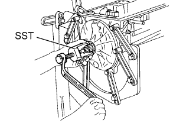 |
Снимите масляный насос с помощью SST.
Снимите с масляного насоса кольцевое уплотнение.
Снимите кольцо подшипника с масляного насоса.
| 31. СНИМИТЕ ШЕСТЕРНЮ ПОВЫШАЮЩЕЙ ПЛАНЕТАРНОЙ ПЕРЕДАЧИ В СБОРЕ С МУФТОЙ ПРЯМОЙ ПОВЫШАЮЩЕЙ ПЕРЕДАЧИ И МУФТОЙ СВОБОДНОГО ХОДА ПОВЫШАЮЩЕЙ ПЕРЕДАЧИ В СБОРЕ |
Снимите шестерню планетарной передачи с муфтой прямой передачи и муфтой свободного хода с картера трансмиссии.
Снимите кольцо подшипника и подшипник.
| *1 | Кольцо подшипника |
| *2 | Подшипник |
| 32. ПРОВЕРЬТЕ МУФТУ СВОБОДНОГО ХОДА ПОВЫШАЮЩЕЙ ПЕРЕДАЧИ |
| 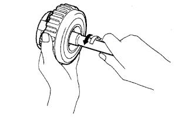 |
Удерживая барабан муфты прямой повышающей передачи, поверните первичный вал. Убедитесь, что первичный вал свободно вращается по часовой стрелке и блокируется при вращении против часовой стрелки.
 | Заблокировано |
 | Разблокировано |
| 33. СНИМИТЕ МУФТУ ПРЯМОЙ ПОВЫШАЮЩЕЙ ПЕРЕДАЧИ В СБОРЕ |
| 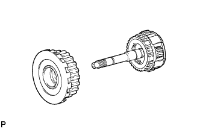 |
| 34. СНИМИТЕ КОМПЛЕКТ ДИСКОВ МУФТЫ ПРЯМОЙ ПОВЫШАЮЩЕЙ ПЕРЕДАЧИ |
С помощью отвертки снимите пружинное стопорное кольцо с барабана муфты прямой повышающей передачи.
Снимите фланец, 2 диска и 2 пластины.
| 35. ПРОВЕРЬТЕ ДИСК МУФТЫ ПРЯМОЙ ПОВЫШАЮЩЕЙ ПЕРЕДАЧИ |
 |
Замените все диски при наличии какого-либо из следующих дефектов: 1) износа или подгорания диска, пластины или фланца; 2) отслоения или выцветания фрикционной накладки диска; 3) повреждения (даже небольшого) канавок или проштампованных номеров.
| 36. СНИМИТЕ СТЯЖНУЮ ПРУЖИНУ МУФТЫ ПРЯМОЙ ПОВЫШАЮЩЕЙ ПЕРЕДАЧИ В СБОРЕ |
Установите SST на держатель стяжной пружины и сожмите пружину прессом.
С помощью съемника стопорных колец снимите пружинное стопорное кольцо.
Снимите стяжную пружину муфты.
| 37. ПРОВЕРЬТЕ СТЯЖНУЮ ПРУЖИНУ МУФТЫ ПРЯМОЙ ПОВЫШАЮЩЕЙ ПЕРЕДАЧИ В СБОРЕ |
 |
С помощью штангенциркуля измерьте длину пружины с седлом в свободном состоянии.
| 38. СНИМИТЕ ПОРШЕНЬ МУФТЫ ПРЯМОЙ ПОВЫШАЮЩЕЙ ПЕРЕДАЧИ В СБОРЕ |
Поместите масляный насос на муфту гидротрансформатора, а затем установите муфту прямой повышающей передачи на масляный насос.
Удерживая рукой поршень муфты прямой повышающей передачи, подайте сжатый воздух (392 кПа, (4,0 кгс/см2, 57 фунтов на кв. дюйм)) в масляный насос, чтобы снять поршень муфты прямой повышающей передачи.
Снимите 2 кольцевых уплотнения с поршня.
| 39. ПРОВЕРЬТЕ ПОРШЕНЬ МУФТЫ ПРЯМОЙ ПОВЫШАЮЩЕЙ ПЕРЕДАЧИ В СБОРЕ |
| 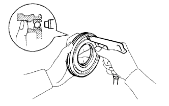 |
Убедитесь, что запорный шарик перемещается свободно, встряхнув поршень.
Убедитесь, что клапан не имеет утечек, подав сжатый воздух под низким давлением.
Если результат не соответствует заданному, замените поршень муфты прямой повышающей передачи в сборе.
| 40. ПРОВЕРЬТЕ БАРАБАН МУФТЫ ПРЯМОЙ ПОВЫШАЮЩЕЙ ПЕРЕДАЧИ В СБОРЕ |
 |
С помощью индикатора часового типа измерьте внутренний диаметр втулок барабана муфты.
| 41. СНИМИТЕ ПРИЖИМНУЮ ПЛАСТИНУ ПОВЫШАЮЩЕЙ ПЕРЕДАЧИ |
| 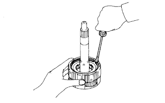 |
С помощью отвертки отделите пружинное стопорное кольцо.
 |
Снимите прижимную пластину.
| 42. СНИМИТЕ НАРУЖНОЕ КОЛЬЦО МУФТЫ СВОБОДНОГО ХОДА ПОВЫШАЮЩЕЙ ПЕРЕДАЧИ ВМЕСТЕ С МУФТОЙ СВОБОДНОГО ХОДА ПОВЫШАЮЩЕЙ ПЕРЕДАЧИ |
| 43. СНИМИТЕ МУФТУ СВОБОДНОГО ХОДА ПОВЫШАЮЩЕЙ ПЕРЕДАЧИ |
Снимите муфту свободного хода повышающей передачи с наружного кольца.
| 44. СНИМИТЕ УПОРНУЮ ШАЙБУ ШЕСТЕРНИ ПОВЫШАЮЩЕЙ ПЛАНЕТАРНОЙ ПЕРЕДАЧИ № 3 |
 |
| 45. ПРОВЕРЬТЕ ШЕСТЕРНЮ ПОВЫШАЮЩЕЙ ПЛАНЕТАРНОЙ ПЕРЕДАЧИ В СБОРЕ |
| 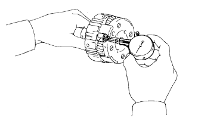 |
С помощью индикатора часового типа измерьте внутренний диаметр втулки планетарной передачи.
 |
С помощью комплекта плоских щупов измерьте осевой зазор ведущей шестерни планетарной передачи.
| 46. СНИМИТЕ КОРОННУЮ ШЕСТЕРНЮ ПОВЫШАЮЩЕЙ ПЛАНЕТАРНОЙ ПЕРЕДАЧИ ВМЕСТЕ С ФЛАНЦЕМ КОРОННОЙ ШЕСТЕРНИ ПОВЫШАЮЩЕЙ ПЛАНЕТАРНОЙ ПЕРЕДАЧИ |
 |
Снимите коронную шестерню вместе с фланцем коронной шестерни повышающей планетарной передачи с картера трансмиссии.
Снимите подшипник и кольцо подшипника с коронной шестерни повышающей планетарной передачи.
| *1 | Подшипник |
| *2 | Кольцо подшипника |
| 47. СНИМИТЕ ФЛАНЕЦ КОРОННОЙ ШЕСТЕРНИ ПОВЫШАЮЩЕЙ ПЛАНЕТАРНОЙ ПЕРЕДАЧИ |
 |
С помощью отвертки отделите пружинное стопорное кольцо.
| 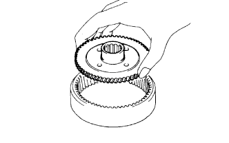 |
Снимите фланец коронной шестерни с коронной шестерни повышающей планетарной передачи.
| 48. СНИМИТЕ КОМПЛЕКТ ДИСКОВ ТОРМОЗА ПОВЫШАЮЩЕЙ ПЕРЕДАЧИ |
С помощью отвертки отделите пружинное стопорное кольцо.
Извлеките фланец, 3 диска и 3 пластины из картера трансмиссии.
| 49. ПРОВЕРЬТЕ ДИСК ТОРМОЗА ПОВЫШАЮЩЕЙ ПЕРЕДАЧИ |
| 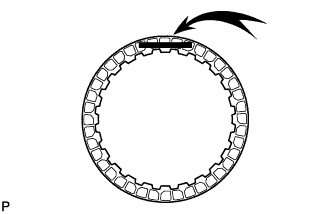 |
Замените все диски при наличии какого-либо из следующих дефектов: 1) износа или подгорания диска, пластины или фланца; 2) отслоения или выцветания фрикционной накладки диска; 3) повреждения (даже небольшого) канавок или проштампованных номеров.
| 50. ПРОВЕРЬТЕ ХОД ПОРШНЯ ТОРМОЗНОГО ЦИЛИНДРА ОБЕСПЕЧЕНИЯ РЕЖИМА ТОРМОЖЕНИЯ ДВИГАТЕЛЕМ НА ВТОРОЙ ПЕРЕДАЧЕ |
 |
С помощью водостойкого карандаша нанесите метку на шток поршня тормозного цилиндра обеспечения режима торможения двигателем на 2-й передаче, как показано на рисунке.
| *1 | Шток поршня |
| *2 | Метка |
| 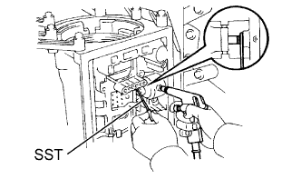 |
С помощью SST измерьте ход поршня, подавая сжатый воздух (392 кПа, (4,0 кгс/см2, 57 фунтов на кв. дюйм)) и прекращая его подачу.
| 51. СНИМИТЕ ОПОРУ ПОВЫШАЮЩЕЙ ПЕРЕДАЧИ В СБОРЕ |
Выверните 2 болта, удерживая тормоз повышающей передачи в сборе в картере.
С помощью SST снимите пружинное стопорное кольцо.
С помощью SST снимите тормоз повышающей передачи в сборе.
 |
Снимите подшипник и кольцо подшипника с тормоза повышающей передачи.
| *1 | Подшипник |
| *2 | Кольцо подшипника |
| 52. ПРОВЕРЬТЕ РАБОТУ ПОРШНЯ ТОРМОЗНОГО ЦИЛИНДРА ПОВЫШАЮЩЕЙ ПЕРЕДАЧИ |
 |
Установите опору повышающей передачи в сборе на муфту прямой передачи в сборе.
 |
Подайте сжатый воздух (392 кПа, (4 кгс/см2, 57 фунтов на кв. дюйм)) в канал для масла и убедитесь, что поршень тормозного цилиндра повышающей передачи перемещается свободно.
| 53. СНИМИТЕ ВОЗВРАТНУЮ ПРУЖИНУ ТОРМОЗА ПОВЫШАЮЩЕЙ ПЕРЕДАЧИ |
Установите SST на держатель стяжной пружины и сожмите пружину прессом.
С помощью отвертки отделите пружинное стопорное кольцо.
Снимите стяжную пружину тормоза.
| 54. ПРОВЕРЬТЕ ВОЗВРАТНУЮ ПРУЖИНУ ТОРМОЗА ПОВЫШАЮЩЕЙ ПЕРЕДАЧИ В СБОРЕ |
 |
С помощью штангенциркуля измерьте длину пружины с седлом в свободном состоянии.
| 55. СНИМИТЕ ПОРШЕНЬ ТОРМОЗНОГО ЦИЛИНДРА ПОВЫШАЮЩЕЙ ПЕРЕДАЧИ |
Установите опору повышающей передачи на муфту прямой передачи в сборе.
Удерживая поршень тормозного цилиндра повышающей передачи без перекоса, подайте сжатый воздух (392 кПа, (4 кгс/см2, 57 фунтов на кв. дюйм)) в канал, чтобы извлечь поршень тормозного цилиндра повышающей передачи.
| 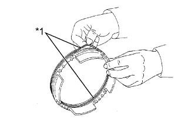 |
Снимите 2 кольцевых уплотнения с поршня тормозного цилиндра повышающей передачи.
| *1 | Кольцевое уплотнение |
| 56. СНИМИТЕ МАСЛОУПЛОТНИТЕЛЬНОЕ КОЛЬЦО БАРАБАНА МУФТЫ ПОВЫШАЮЩЕЙ ПЕРЕДАЧИ |
Снимите 2 маслоуплотнительных кольца с опоры повышающей передачи.
| 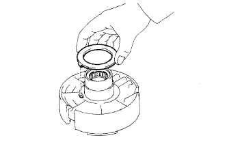 |
Снимите упорную шайбу барабана муфты с опоры повышающей передачи.
| 57. СНИМИТЕ ПОРШЕНЬ ТОРМОЗНОГО ЦИЛИНДРА ОБЕСПЕЧЕНИЯ РЕЖИМА ТОРМОЖЕНИЯ ДВИГАТЕЛЕМ НА ВТОРОЙ ПЕРЕДАЧЕ |
| 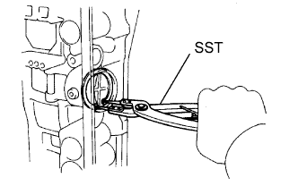 |
С помощью SST снимите пружинное стопорное кольцо.
Подав сжатый воздух в отверстие для масла, снимите крышку, поршень в сборе и пружину тормоза обеспечения режима торможения двигателем на второй передаче.
Снимите с крышки 2 кольцевых уплотнения.
| 58. СНИМИТЕ МАСЛОУПЛОТНИТЕЛЬНОЕ КОЛЬЦО ПОРШНЯ ТОРМОЗНОГО ЦИЛИНДРА ОБЕСПЕЧЕНИЯ РЕЖИМА ТОРМОЖЕНИЯ ДВИГАТЕЛЕМ НА ВТОРОЙ ПЕРЕДАЧЕ |
| 59. СНИМИТЕ ШТОК ПОРШНЯ ТОРМОЗНОГО ЦИЛИНДРА ОБЕСПЕЧЕНИЯ РЕЖИМА ТОРМОЖЕНИЯ ДВИГАТЕЛЕМ НА ВТОРОЙ ПЕРЕДАЧЕ |
 |
С усилием прижмите поршень, чтобы сжать пружину сжатия.
Снимите разрезное уплотнение.
 |
Снимите шток поршня, плоскую шайбу и пружину с поршня.
| *1 | Шток поршня |
| *2 | Плоская шайба |
| *3 | Пружина |
| *4 | Поршень |
| 60. СНИМИТЕ МУФТУ ПРЯМОЙ ПЕРЕДАЧИ В СБОРЕ С МУФТОЙ ПЕРЕДНЕГО ХОДА В СБОРЕ |
Снимите муфту прямой передачи с муфтой переднего хода с картера.
Снимите 2 подшипника и кольцо подшипника.
| *1 | Подшипник |
| *2 | Кольцо подшипника |
| 61. СНИМИТЕ МУФТУ ПЕРЕДНЕГО ХОДА В СБОРЕ |
 |
Снимите муфту переднего хода с муфты прямой передачи.
Снимите подшипник, упорную шайбу и кольцо подшипника с муфты переднего хода.
| *1 | Подшипник |
| *2 | Упорная шайба |
| *3 | Кольцо подшипника |
| 62. СНИМИТЕ КОМПЛЕКТ ДИСКОВ МУФТЫ ПРЯМОЙ ПЕРЕДАЧИ |
| 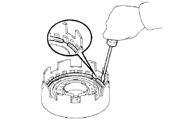 |
С помощью отвертки снимите пружинное стопорное кольцо с барабана муфты прямой передачи.
Снимите фланец, 3 диска и 3 пластины.
| 63. ПРОВЕРЬТЕ ДИСК МУФТЫ ПРЯМОЙ ПЕРЕДАЧИ |
 |
Замените все диски при наличии какого-либо из следующих дефектов: 1) износа или подгорания диска, пластины или фланца; 2) отслоения или выцветания фрикционной накладки диска; 3) повреждения (даже небольшого) канавок или проштампованных номеров.
| 64. СНИМИТЕ СТЯЖНУЮ ПРУЖИНУ МУФТЫ ПРЯМОЙ ПЕРЕДАЧИ В СБОРЕ |
Установите SST на держатель стяжной пружины и сожмите пружину прессом.
С помощью SST снимите пружинное стопорное кольцо.
Снимите возвратную пружину.
| 65. ПРОВЕРЬТЕ СТЯЖНУЮ ПРУЖИНУ МУФТЫ ПРЯМОЙ ПЕРЕДАЧИ В СБОРЕ |
| 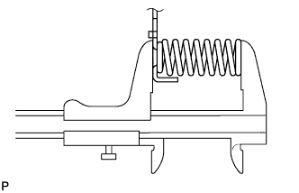 |
С помощью штангенциркуля измерьте длину пружины с седлом в свободном состоянии.
| 66. СНИМИТЕ ПОРШЕНЬ МУФТЫ ПРЯМОЙ ПЕРЕДАЧИ В СБОРЕ |
Установите барабан муфты прямой передачи на опору повышающей передачи.
Удерживая поршень муфты прямой передачи, подайте сжатый воздух (196 кПа, (2,0 кгс/см2, 28,5 фунтов на кв. дюйм)) в опору повышающей передачи, чтобы снять поршень муфты прямой передачи.
С помощью небольшой отвертки снимите 2 кольцевых уплотнения с поршня.
| *1 | Кольцевое уплотнение |
| 67. ПРОВЕРЬТЕ ПОРШЕНЬ МУФТЫ ПРЯМОЙ ПЕРЕДАЧИ В СБОРЕ |
| 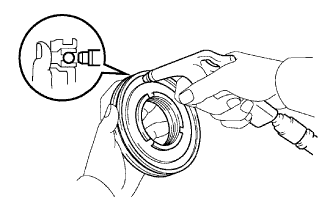 |
Убедитесь, что запорный шарик перемещается свободно, встряхнув поршень.
Убедитесь, что клапан не имеет утечек, подав сжатый воздух под низким давлением.
| 68. ПРОВЕРЬТЕ БАРАБАН МУФТЫ ПРЯМОЙ ПЕРЕДАЧИ В СБОРЕ |
 |
С помощью индикатора часового типа измерьте внутренний диаметр втулки барабана муфты.
| 69. ЗАКРЕПИТЕ МУФТУ ПЕРЕДНЕГО ХОДА В СБОРЕ |
Установите опору повышающей передачи на деревянные бруски или подобные предметы, чтобы вал муфты переднего хода не касался рабочего стенда.
Установите муфту переднего хода на опору повышающей передачи.
| 70. СНИМИТЕ КОМПЛЕКТ ДИСКОВ МУФТЫ ПЕРЕДНЕГО ХОДА |
С помощью отвертки снимите пружинное стопорное кольцо с барабана муфты переднего хода.
Снимите фланец, 6 диска и 6 пластин.
 |
Снимите пружинящий диск.
| 71. ПРОВЕРЬТЕ ДИСК МУФТЫ ПЕРЕДНЕГО ХОДА |
| 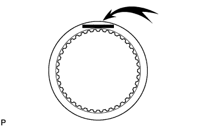 |
Замените все диски при наличии какого-либо из следующих дефектов: 1) износа или подгорания диска, пластины или фланца; 2) отслоения или выцветания фрикционной накладки диска; 3) повреждения (даже небольшого) канавок или проштампованных номеров.
| 72. СНИМИТЕ СТЯЖНУЮ ПРУЖИНУ МУФТЫ ПЕРЕДНЕГО ХОДА В СБОРЕ |
Установите SST на держатель стяжной пружины и сожмите пружину прессом.
С помощью SST снимите пружинное стопорное кольцо.
Снимите стяжную пружину поршня.
| 73. ПРОВЕРЬТЕ СТЯЖНУЮ ПРУЖИНУ МУФТЫ ПЕРЕДНЕГО ХОДА В СБОРЕ |
 |
С помощью штангенциркуля измерьте длину пружины с седлом в свободном состоянии.
| 74. СНИМИТЕ ПОРШЕНЬ МУФТЫ ПЕРЕДНЕГО ХОДА В СБОРЕ |
Установите барабан муфты переднего хода на опору повышающей передачи.
Удерживая поршень муфты переднего хода рукой, подайте сжатый воздух (196 кПа, (2,0 кгс/см2, 28,5 фунтов на кв. дюйм)) в опору повышающей передачи, чтобы снять поршень муфты переднего хода.
Снимите кольцевое уплотнение с барабана муфты переднего хода.
Снимите 2 кольцевых уплотнения с поршня муфты переднего хода.
| *1 | Кольцевое уплотнение |
| 75. ПРОВЕРЬТЕ ПОРШЕНЬ МУФТЫ ПЕРЕДНЕГО ХОДА В СБОРЕ |
Убедитесь, что запорный шарик перемещается свободно, встряхнув поршень.
Убедитесь, что клапан не имеет утечек, подав сжатый воздух под низким давлением.
| 76. СНИМИТЕ МАСЛОУПЛОТНИТЕЛЬНОЕ КОЛЬЦО ПЕРВИЧНОГО ВАЛА |
| 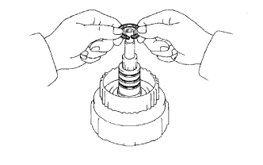 |
Извлеките 3 маслоуплотнительных кольца из канавки барабана муфты переднего хода.
| 77. ПРОВЕРЬТЕ ПЕРВИЧНЫЙ ВАЛ В СБОРЕ |
| 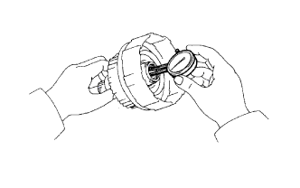 |
С помощью индикатора часового типа измерьте внутренний диаметр втулки первичного вала.
| 78. СНИМИТЕ ЛЕНТУ ТОРМОЗА ОБЕСПЕЧЕНИЯ РЕЖИМА ТОРМОЖЕНИЯ ДВИГАТЕЛЕМ НА ВТОРОЙ ПЕРЕДАЧЕ В СБОРЕ |
С помощью отвертки снимите 2 разрезных уплотнения со штифта и извлеките штифт.
 |
Извлеките из картера ленту тормоза обеспечения режима торможения двигателем на 2-й передаче.
| 79. ПРОВЕРЬТЕ ЛЕНТУ ТОРМОЗА ОБЕСПЕЧЕНИЯ РЕЖИМА ТОРМОЖЕНИЯ ДВИГАТЕЛЕМ НА ВТОРОЙ ПЕРЕДАЧЕ В СБОРЕ |
| 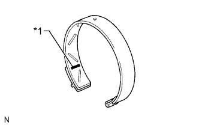 |
| *1 | Проштампованный номер |
| 80. СНИМИТЕ КОРОННУЮ ШЕСТЕРНЮ ПЕРЕДНЕЙ ПЛАНЕТАРНОЙ ПЕРЕДАЧИ В СБОРЕ |
Извлеките коронную шестерню планетарной передачи из картера.
Снимите 2 подшипника и кольцо подшипника с коронной шестерни планетарной передачи.
| *1 | Подшипник |
| *2 | Кольцо подшипника |
 |
Установите выходной вал на деревянные бруски или подобные предметы.
| *1 | Деревянный брусок |
| 81. ПРОВЕРЬТЕ КОРОННУЮ ШЕСТЕРНЮ ПЕРЕДНЕЙ ПЛАНЕТАРНОЙ ПЕРЕДАЧИ В СБОРЕ |
 |
С помощью индикатора часового типа измерьте внутренний диаметр втулки коронной шестерни планетарной передачи.
| 82. СНИМИТЕ ПЕРЕДНЮЮ ПЛАНЕТАРНУЮ ПЕРЕДАЧУ В СБОРЕ |
Снимите кольцо подшипника с планетарной передачи.
 |
С помощью SST снимите пружинное стопорное кольцо.
| 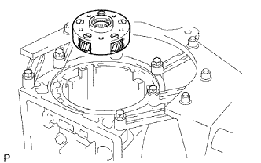 |
Извлеките шестерню планетарной передачи из картера.
Снимите подшипник и кольцо подшипника с планетарной передачи.
| 83. ПРОВЕРЬТЕ ПЕРЕДНЮЮ ПЛАНЕТАРНУЮ ПЕРЕДАЧУ В СБОРЕ |
| 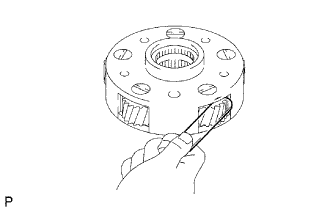 |
С помощью комплекта плоских щупов измерьте осевой зазор ведущей шестерни.
| 84. СНИМИТЕ СОЛНЕЧНУЮ ШЕСТЕРНЮ ПЛАНЕТАРНОЙ ПЕРЕДАЧИ В СБОРЕ ВМЕСТЕ С ПЕРВИЧНЫМ БАРАБАНОМ СОЛНЕЧНОЙ ШЕСТЕРНИ И МУФТОЙ СВОБОДНОГО ХОДА № 1 В СБОРЕ |
Извлеките солнечную шестерню вместе с первичным барабаном солнечной шестерни и муфтой свободного хода из картера.
Снимите упорную шайбу.
| *1 | Упорная шайба |
| 85. ПРОВЕРЬТЕ МУФТУ СВОБОДНОГО ХОДА № 1 В СБОРЕ |
| 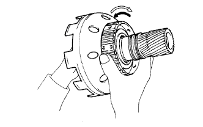 |
Удерживая солнечную шестерню планетарной передачи, поверните муфту свободного хода в сборе. Убедитесь, что ступица муфты свободного хода свободно вращается по часовой стрелке и блокируется при вращении против часовой стрелки.
| Заблокировано |
| Разблокировано |
| 86. СНИМИТЕ МУФТУ СВОБОДНОГО ХОДА № 1 В СБОРЕ |
| 87. СНИМИТЕ УПОРНУЮ ШАЙБУ МУФТЫ СВОБОДНОГО ХОДА № 1 |
| 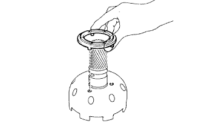 |
| 88. СНИМИТЕ МАСЛОУПЛОТНИТЕЛЬНОЕ КОЛЬЦО ВАЛА СОЛНЕЧНОЙ ШЕСТЕРНИ |
 |
Снимите 2 маслоуплотнительных кольца с первичного барабана солнечной шестерни.
| 89. СНИМИТЕ ПЕРВИЧНЫЙ БАРАБАН СОЛНЕЧНОЙ ШЕСТЕРНИ |
Установите солнечную шестерню планетарной передачи на деревянный брусок или подобный предмет.
С помощью съемника стопорных колец снимите пружинное стопорное кольцо.
Снимите первичный барабан с солнечной шестерни планетарной передачи.
| 90. СНИМИТЕ ПРУЖИННОЕ СТОПОРНОЕ КОЛЬЦО ВАЛА ПЕРВИЧНОГО БАРАБАНА СОЛНЕЧНОЙ ШЕСТЕРНИ |
| 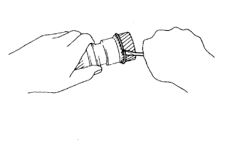 |
С помощью отвертки снимите пружинное стопорное кольцо с солнечной шестерни планетарной передачи.
| 91. ПРОВЕРЬТЕ СОЛНЕЧНУЮ ШЕСТЕРНЮ ПЛАНЕТАРНОЙ ПЕРЕДАЧИ В СБОРЕ |
 |
С помощью индикатора часового типа измерьте внутренний диаметр втулок солнечной шестерни планетарной передачи.
| 92. СНИМИТЕ КОМПЛЕКТ ТОРМОЗНЫХ ДИСКОВ ВТОРОЙ ПЕРЕДАЧИ |
| 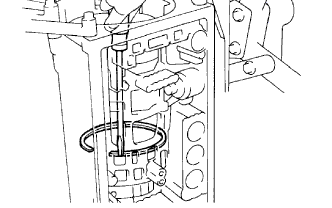 |
С помощью отвертки отделите пружинное стопорное кольцо.
Снимите 2 фланца, 5 дисков и 4 пластины.
| 93. СНИМИТЕ МУФТУ ПОРШНЯ ТОРМОЗНОГО ЦИЛИНДРА ВТОРОЙ ПЕРЕДАЧИ |
При помощи отвертки снимите муфту.
| 94. СНИМИТЕ ВЫХОДНОЙ ВАЛ ВМЕСТЕ С ЗАДНЕЙ ПЛАНЕТАРНОЙ ПЕРЕДАЧЕЙ, МУФТОЙ СВОБОДНОГО ХОДА № 2, КОМПЛЕКТОМ ТОРМОЗНЫХ ДИСКОВ ПЕРВОЙ ПЕРЕДАЧИ И ПЕРЕДАЧИ ЗАДНЕГО ХОДА И ТОРМОЗНЫМ БАРАБАНОМ ВТОРОЙ ПЕРЕДАЧИ |
С помощью SST и отвертки снимите пружинное стопорное кольцо.
| 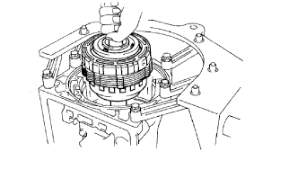 |
Извлеките выходной вал вместе с задней планетарной передачей, муфтой свободного хода № 2, комплектом тормозных дисков первой передачи и передачи заднего хода и тормозным барабаном второй передачи из картера трансмиссии.
Извлеките упорный подшипник из картера трансмиссии.
| 95. СНИМИТЕ ТОРМОЗНОЙ БАРАБАН ВТОРОЙ ПЕРЕДАЧИ В СБОРЕ |
Снимите тормозной барабан второй передачи.
| 96. СНИМИТЕ УПОРНУЮ ШАЙБУ ВОДИЛА ПЛАНЕТАРНОЙ ПЕРЕДАЧИ № 4 |
| 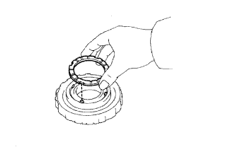 |
| 97. ПРОВЕРЬТЕ ПОРШЕНЬ ТОРМОЗНОГО ЦИЛИНДРА ВТОРОЙ ПЕРЕДАЧИ |
| 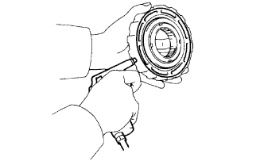 |
Прерывисто подавая сжатый воздух под низким давлением в тормозной барабан второй передачи, убедитесь, что поршень тормозного цилиндра второй передачи перемещается плавно.
| 98. СНИМИТЕ СТЯЖНУЮ ПРУЖИНУ ПОРШНЯ ТОРМОЗНОГО ЦИЛИНДРА ВТОРОЙ ПЕРЕДАЧИ В СБОРЕ |
 |
Установите SST на держатель пружины и сожмите возвратную пружину поршня прессом.
С помощью съемника стопорных колец снимите пружинное стопорное кольцо.
Снимите седло стяжной пружины поршня тормозного цилиндра второй передачи.
Снимите стяжную пружину поршня.
| 99. ПРОВЕРЬТЕ СТЯЖНУЮ ПРУЖИНУ ПОРШНЯ ТОРМОЗНОГО ЦИЛИНДРА ВТОРОЙ ПЕРЕДАЧИ В СБОРЕ |
 |
С помощью штангенциркуля измерьте длину пружины с седлом в свободном состоянии.
| 100. СНИМИТЕ ПОРШЕНЬ ТОРМОЗНОГО ЦИЛИНДРА ВТОРОЙ ПЕРЕДАЧИ |
Удерживая поршень тормозного цилиндра второй передачи рукой, подайте сжатый воздух в барабан тормоза 2-й передачи, чтобы извлечь поршень тормозного цилиндра 2-й передачи.
Снимите 2 кольцевых уплотнения с поршня.
| 101. СНИМИТЕ КОМПЛЕКТ ТОРМОЗНЫХ ДИСКОВ ПЕРВОЙ ПЕРЕДАЧИ И ПЕРЕДАЧИ ЗАДНЕГО ХОДА |
Снимите фланец, 6 пластин и 6 дисков.
| 102. ПРОВЕРЬТЕ ТОРМОЗНОЙ ДИСК ПЕРВОЙ ПЕРЕДАЧИ И ПЕРЕДАЧИ ЗАДНЕГО ХОДА |
 |
Замените все диски при наличии какого-либо из следующих дефектов: 1) износа или подгорания диска, пластины или фланца; 2) отслоения или выцветания фрикционной накладки диска; 3) повреждения (даже небольшого) канавок или проштампованных номеров.
| 103. СНИМИТЕ ВЫХОДНОЙ ВАЛ |
| 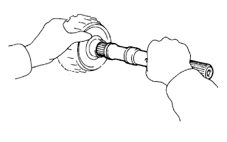 |
| 104. СНИМИТЕ МАСЛОУПЛОТНИТЕЛЬНОЕ КОЛЬЦО ВЫХОДНОГО ВАЛА ПЛАНЕТАРНОЙ ПЕРЕДАЧИ |
| 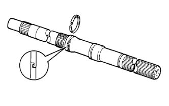 |
| 105. СНИМИТЕ КОРОННУЮ ШЕСТЕРНЮ ЗАДНЕЙ ПЛАНЕТАРНОЙ ПЕРЕДАЧИ |
 |
Снимите заднюю планетарную передачу с коронной шестерни планетарной передачи.
Снимите 2 кольца подшипника и подшипник с коронной шестерни планетарной передачи.
| 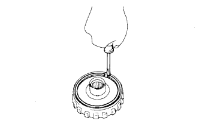 |
С помощью отвертки отделите пружинное стопорное кольцо.
Снимите фланец коронной шестерни планетарной передачи.
| 106. ПРОВЕРЬТЕ МУФТУ СВОБОДНОГО ХОДА № 2 |
| 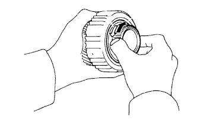 |
Удерживая планетарную передачу, поверните внутреннее кольцо муфты свободного хода. Убедитесь, что внутреннее кольцо муфты свободного хода свободно вращается против часовой стрелки и блокируется при вращении по часовой стрелке.
| Заблокировано |
| Разблокировано |
| 107. СНИМИТЕ МУФТУ СВОБОДНОГО ХОДА № 2 |
| 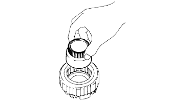 |
Снимите внутреннее кольцо муфты свободного хода с планетарной передачи.
| 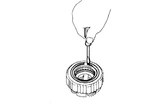 |
С помощью отвертки отделите пружинное стопорное кольцо.
Снимите муфту свободного хода с планетарной передачи.
| 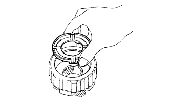 |
Снимите упорную шайбу водила планетарной передачи № 2 с планетарной передачи.
| 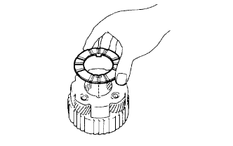 |
Снимите упорную шайбу водила планетарной передачи № 1 с планетарной передачи.
| 108. ПРОВЕРЬТЕ ЗАДНЮЮ ПЛАНЕТАРНУЮ ПЕРЕДАЧУ В СБОРЕ |
 |
С помощью комплекта плоских щупов измерьте осевой зазор.
| 109. СНИМИТЕ ПЛАСТИНЧАТУЮ ПРУЖИНУ |
 |
| 110. СНИМИТЕ ПРОКЛАДКУ ТОРМОЗНОГО БАРАБАНА |
| 111. СНИМИТЕ СТЯЖНУЮ ПРУЖИНУ ТОРМОЗА ПЕРВОЙ ПЕРЕДАЧИ И ПЕРЕДАЧИ ЗАДНЕГО ХОДА В СБОРЕ |
Установите SST на стяжную пружину тормоза первой передачи и передачи заднего хода и сожмите пружину.
Используя SST, снимите пружинное стопорное кольцо и стяжную пружину тормоза.
| *1 | Пружинное стопорное кольцо |
| 112. ПРОВЕРЬТЕ СТЯЖНУЮ ПРУЖИНУ ТОРМОЗА 1-Й ПЕРЕДАЧИ И ПЕРЕДАЧИ ЗАДНЕГО ХОДА В СБОРЕ |
| 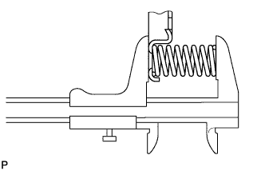 |
С помощью штангенциркуля измерьте длину пружины с седлом в свободном состоянии.
| 113. СНИМИТЕ ПОРШЕНЬ ТОРМОЗНОГО ЦИЛИНДРА ПЕРВОЙ ПЕРЕДАЧИ И ПЕРЕДАЧИ ЗАДНЕГО ХОДА № 2 |
Удерживая поршень тормозного цилиндра первой передачи и передачи заднего хода № 2, подайте сжатый воздух в картер трансмиссии, чтобы извлечь поршень тормозного цилиндра.
Снимите кольцевое уплотнение с поршня тормозного цилиндра.
| 114. СНИМИТЕ РЕАКТИВНУЮ ВТУЛКУ ТОРМОЗА |
С помощью SST снимите муфту.
Снимите кольцевые уплотнения с муфты.
| 115. СНИМИТЕ ПОРШЕНЬ ТОРМОЗНОГО ЦИЛИНДРА 1-Й ПЕРЕДАЧИ И ПЕРЕДАЧИ ЗАДНЕГО ХОДА № 1 |
Используя SST, снимите поршень тормозного цилиндра.
Снимите с поршня тормозного цилиндра 2 кольцевых уплотнения.
| 116. ПРОВЕРЬТЕ ВТУЛКУ КАРТЕРА ТРАНСМИССИИ |
| 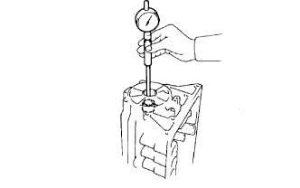 |
С помощью нутромера измерьте внутренний диаметр задней втулки картера трансмиссии.